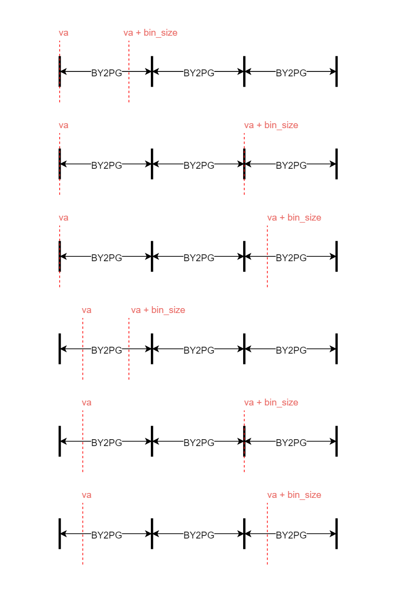
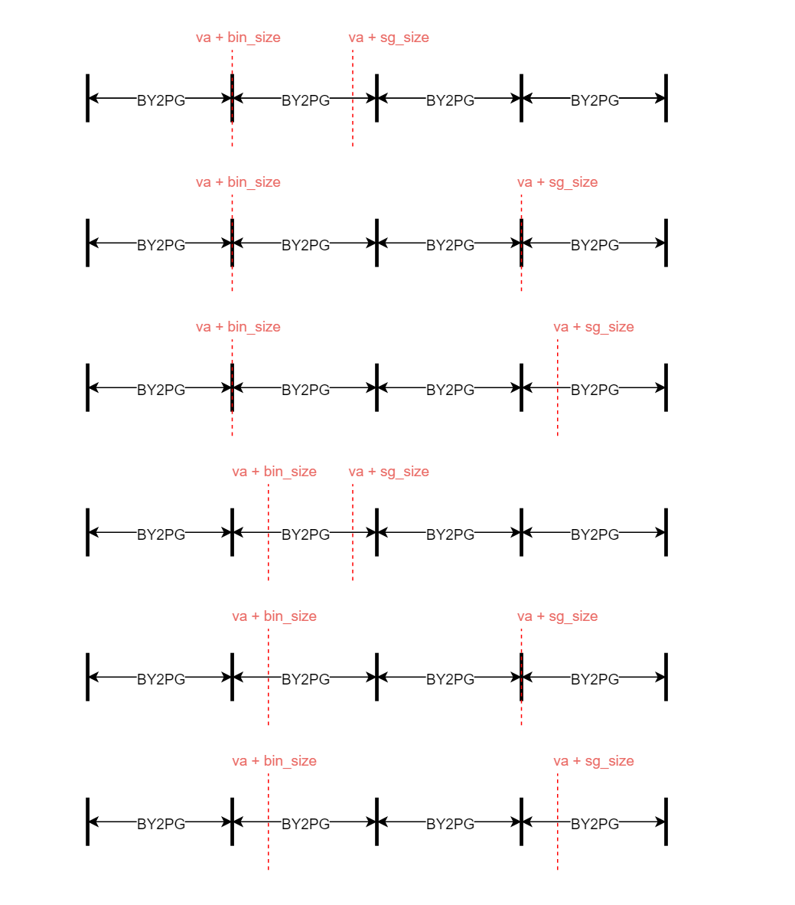
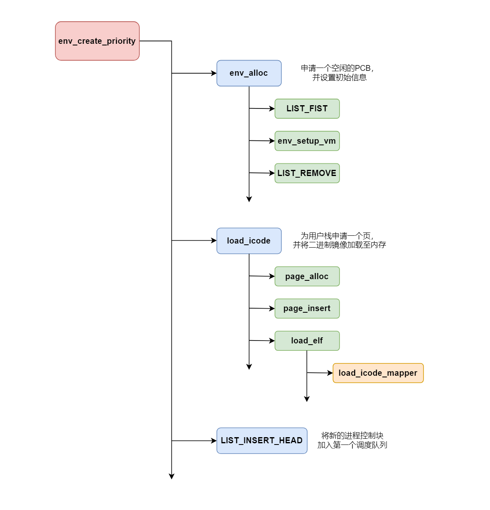
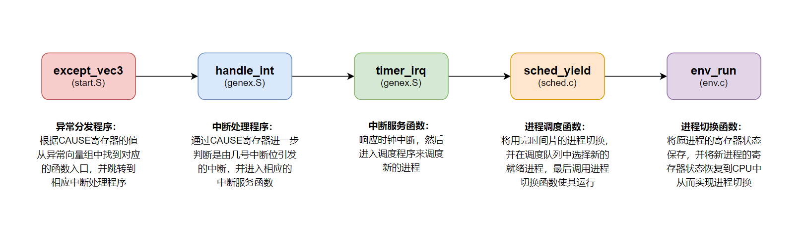
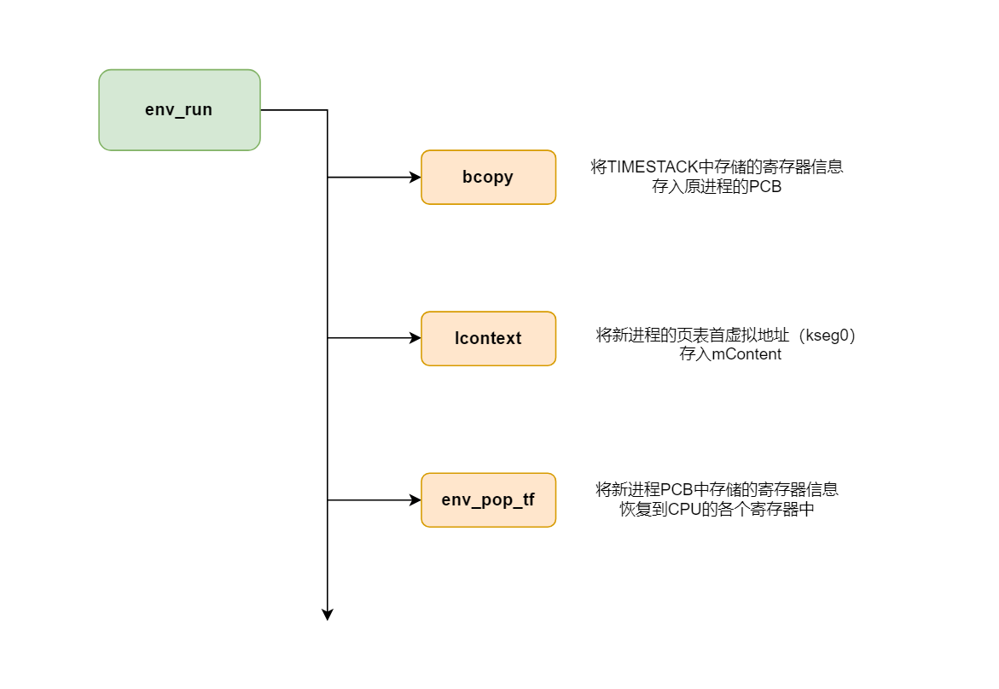

Lab3 实验报告
实验思考题
Thinking 3.1
Q： 思考envid2env
函数:为什么envid2env中需要判断e->env_id != envid
的情况？如果没有这步判断会发生什么情况？
A：
通过阅读该函数的代码，我们能知道，e是根据envid的后10位从envs数组中获得的。
int envid2env(u_int envid, struct Env **penv, int checkperm)
{
struct Env *e;
if (envid == 0) {
*penv = curenv;
return 0;
} else {
e = envs + ENVX(envid);
} e = envs + ENVX(envid);
//...
} 但是这样获得的
e的envid不一定和envid相同，因为envid中还有ASID字段（11-16位），当envs中的某一个进程控制块被替换，新生成的envid的后10不变，但是ASID字段会改变。所以我们需要进一步判断e->env_id != envid是否成立。
如果不判断，则通过最终获得的e可能并不是我们想要的内存控制块，而如果对这个错误的内存控制块操作，则可能会导致内存控制出现混乱（例如获得一个仍在env_free_list中的PCB，然后运行它）。
Thinking 3.2
Q： 结合include/mmu.h
中的地址空间布局，思考env_setup_vm 函数：
- UTOP
和ULIM的含义分别是什么，UTOP 和
ULIM
之间的区域与UTOP以下的区域相比有什么区别？
-
请结合系统自映射机制解释代码中pgdir[PDX(UVPT)]=env_cr3的含义。
- 谈谈自己对进程中物理地址和虚拟地址的理解。
A：
-
ULIM是kseg0和kuseg的分界线，也是内核态虚拟内存区和用户态虚拟内存区的分界线；UTOP是kuseg中只读区和可读写区的分界线。UTOP和ULIM之间是只读区域，用来存放用户的进程信息和页表信息；UTOP之下的是可读写区域，用户可以自由读写。
UVPT是kuseg中保存用户（当前进程）页表信息的虚拟内存区，大小为4MB（0x7fc00000-0x80000000），env_cr3是进程页目录所在的物理地址。pgdir[PDX(UVPT)]=env_cr3表示页目录中第PDX(UVPT)项映射到页目录本身的物理地址，实现自映射机制。- 在用户进程中使用的是虚拟地址（用户可见），然后MMU通过查询页表得到对应的物理地址（用户不可见），并最终通过物理地址在物理内存中获取值。
Thinking 3.3
Q： 找到 user_data
这一参数的来源，思考它的作用。没有这个参数可不可以？为什么？（可以尝试说明实际的应用场景，举一个实际的库中的例子）
A： user_data 在 load_elf
和 load_icode_mapper 两个函数中用到。
//env.c
static int load_icode_mapper(u_long va, u_int32_t sgsize,
u_char *bin, u_int32_t bin_size, void *user_data);
//kernel_elfloader.c
int load_elf(u_char *binary, int size, u_long *entry_point, void *user_data,
int (*map)(u_long va, u_int32_t sgsize,
u_char *bin, u_int32_t bin_size, void *user_data)) {
//...
int ret = map(phdr->p_vaddr, phdr->p_memsz, binary + phdr->p_offset, phdr->p_filesz, user_data);
//...
}不可以没有这个参数，因为在load_elf函数中需要进一步将这个参数传递给函数指针map（实际上指向的是load_icode_mapper）。
Thinking 3.4
Q： 结合load_icode_mapper
的参数以及二进制镜像的大小，考虑该函数可能会面临哪几种复制的情况？你是否都考虑到了？
A：
va和va+bin_size的相对位置有以下6种

va+bin_size和va+sg_size的相对位置有以下6种

Thinking 3.5
Q： 思考上面这一段话，并根据自己在lab2
中的理解，回答：
- 你认为这里的 env_tf.pc
存储的是物理地址还是虚拟地址?
-
你觉得entry_point其值对于每个进程是否一样？该如何理解这种统一或不同？
A： env_tf.pc中存储的是虚拟地址。对于每个用户进程来说entry_point都是一样的（如果不手动进行设置的话），这样可使让程序的每次执行都从一个固定的虚拟地址开始，这种统一对CPU是友好的。
Thinking 3.6
Q：
请查阅相关资料解释，上面提到的epc是什么？为什么要将env_tf.pc设置为epc呢？
A：
epc是CP0中的一个寄存器（14号），用于保存使该进程出现异常（包括中断）时指令所在的pc。进程因异常被切换时将env_tf.pc设置为epc，实际上就是保存了“该进程运行到了什么地方”。这样就可以使进程在下一次被调度时，直接从上次出现异常的位置继续向后运行。
Thinking 3.7
Q： 关于
TIMESTACK，请思考以下问题：
- 操作系统在何时将什么内容存到了 TIMESTACK
区域
- TIMESTACK 和 env_asm.S 中所定义的
KERNEL_SP 的含义有何不同
A：
操作系统在发生时钟中断时时将原进程的env_tf中的内容保存到TIMESTACK区域（在handle_int函数中通过SAVE_ALL实现）。
TIMESTACK时发生时钟中断时的栈顶指针，KERNEL_SP是发生其他中断时的栈顶指针。
Thinking 3.8
Q： 试找出上述 4
个异常处理函数的具体实现位置
A：
handle_int和handle_sys的实现位置比较容易找到，前者在genex.S文件中，后者在syscall.S文件中。而handle_mod和handle_tlb藏得比较深，两者都是通过genex.S文件中的宏函数BUILD_HANDLER实现的。
#宏函数
.macro BUILD_HANDLER exception handler clear
.align 5
NESTED(handle_\exception, TF_SIZE, sp)
.set noat
nop
SAVE_ALL
__build_clear_\clear
.set at
move a0, sp
jal \handler
nop
j ret_from_exception
nop
END(handle_\exception)
.endm
#具体实现
BUILD_HANDLER reserved do_reserved cli
BUILD_HANDLER tlb do_refill cli
BUILD_HANDLER mod page_fault_handler cli
Thinking 3.9
Q： 阅读 kclock_asm.S 和
genex.S 两个文件，并尝试说出 set_timer 和
timer_irq 函数中每行汇编代码的作用
A： set_time函数的分析如下
.macro setup_c0_status set clr
.set push
mfc0 t0, CP0_STATUS
or t0, \set|\clr
xor t0, \clr
mtc0 t0, CP0_STATUS
.set pop
.endm
LEAF(set_timer)
li t0, 0xc8
sb t0, 0xb5000100 #在地址0xb5000100中写入0xc8，使时钟频率设为200
sw sp, KERNEL_SP #将sp寄存器中的值存入地址KERNEL_SP中
setup_c0_status STATUS_CU0|0x1001 0 #将CP0的SR寄存器中第1、12、28位 置为1，作用是开启全局中断使能和始终中断使能，并允许用户态使用CP0
jr ra #函数返回
nop
END(set_timer)time_irq函数的分析如下timer_irq:
sb zero, 0xb5000110 #在地址0xb0000110中写入0，响应时钟中断
1: j sched_yield #跳转到sched_yield函数，进行进程切换
nop
/*li t1, 0xff
lw t0, delay
addu t0, 1
sw t0, delay
beq t0,t1,1f
nop*/
j ret_from_exception #跳转到ret_from_exception函数
nop
### Thinking 3.10
Q： 阅读相关代码，思考操作系统是怎么根据时钟周期切换进程的。
A：
env_sched_list有两个链表存放就绪进程。当进程被创建时，我们将其插入第一个进程调度链表的头部。调用
sched_yield 函数时,
先判断当前时间片是否用完。如果用完，则将其插入另一个链表的结尾，之后判断当前就绪状态进程链表是否为空。如果为空,
将指针切换到另一个就绪状态进程链表。最后从指针指向的链表的头部获取一个就绪进程进行切换。
实验难点图示
我认为该实验的难点在于理解进程的创建流程、时钟中断的处理流程和进程的切换流程。
进程创建流程

时钟中断的处理流程

进程切换流程

体会与感想
Lab3要求我们实现进程的创建、切换和调度，其中进程的调度主要是通过设置异常处理机制来实现。
本次实验的难度比Lab2稍稍低一些，主要原因是本次lab中各个函数之间的联系比较紧密。虽然某些复杂函数理解起来还是有些困难，但是如果在宏观上把握这些函数的关系，那么对于单个函数的理解就变得相对容易了。
所以，在阅读复杂工程的代码时，不要急于阅读每一个函数的细节，而是应该首先搞清楚工程的文件结构（by makefile）和不同函数之间的关系（by doc），然后再按照一定的逻辑顺序阅读代码，这样就可以达到事半功倍的效果。